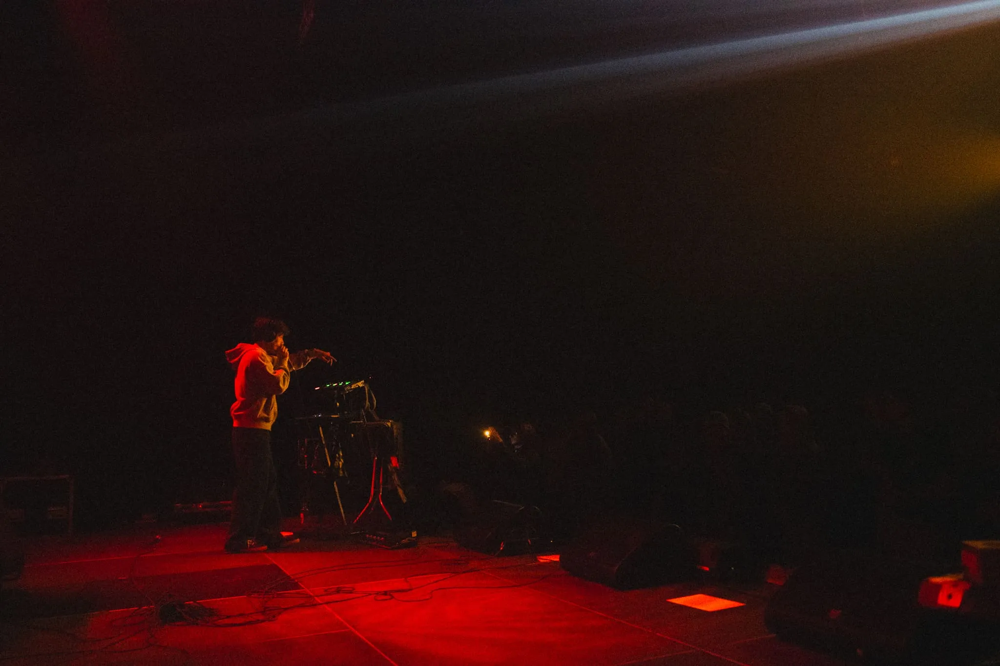

Created in the moment.
Built from sound.
Standub is a one-man-band performance built around live creation. Beatboxing, vocals, synthesizers and loops become the building blocks of each moment.
Some elements are prepared. Others appear on the spot. Familiar structures provide a foundation, while improvisation leaves space for unexpected turns, shifting moods and new ideas.
The result is a performance that can move from dreamy soundscapes to deep basslines and energetic rhythms — without being tied to a single genre.
